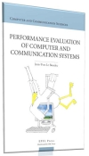

|
Jean-Yves Le Boudec |
|  |
ISBN: 978-2-940222-40-7
@book{leboudec2010performance,
title={Performance Evaluation of Computer and Communication Systems},
author={Le Boudec, Jean-Yves},
year={2010},
publisher={EPFL Press, Lausanne, Switzerland},
isbn={978-2-940222-40-7},
doi={10.1201/b16328}
}
Official publisher's version (pdf, non printable, license); errata for the publisher's version. |
Performance Evaluation is often the critical part in evaluating the results of a research project. Many of us are familiar with simulations, but it is often difficult to address questions like
These and other questions are the topic of this book, which began as a set of lecture notes taught at EPFL.